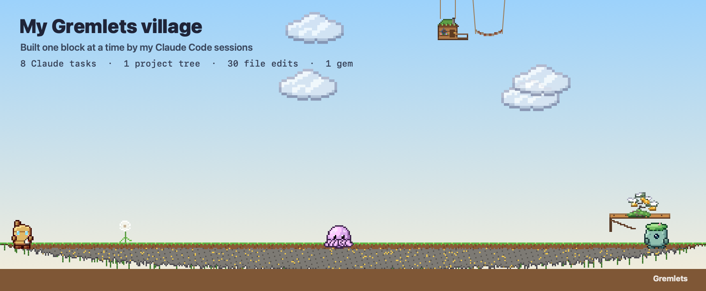
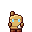
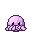
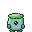

My Gremlets village
Gremlets are little spirits that live on my Mac's desktop. Every time Claude Code works on one of my projects, they build: a little hut hangs beside the terminal Claude works in, its tree grows with every session, and they garden the moss while it works. This is what they've made so far.

8Claude taskseach one grew the grove
9sessionsevery session adds a branch
30file editsa block placed for each
1project treeone bonsai per project
1gemdug up or found on treasure runs
162minutes of mossthe desktop grows over while Claude works
Who lives here

Boilerbitsteam
Inkletdeep
Mosswardenpatina